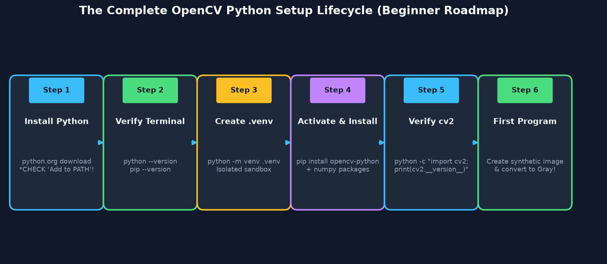
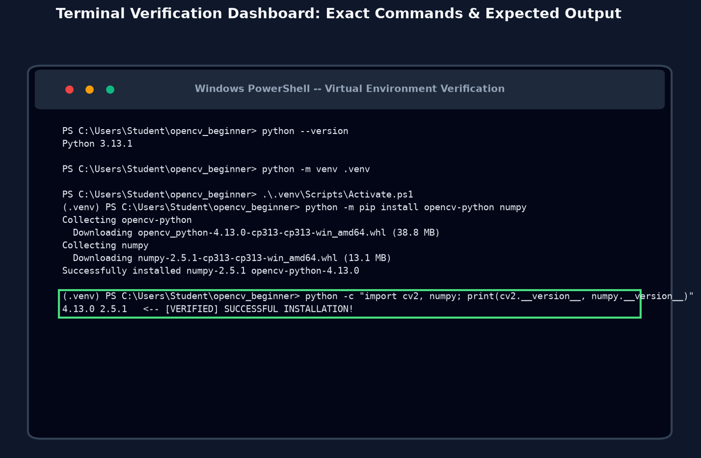
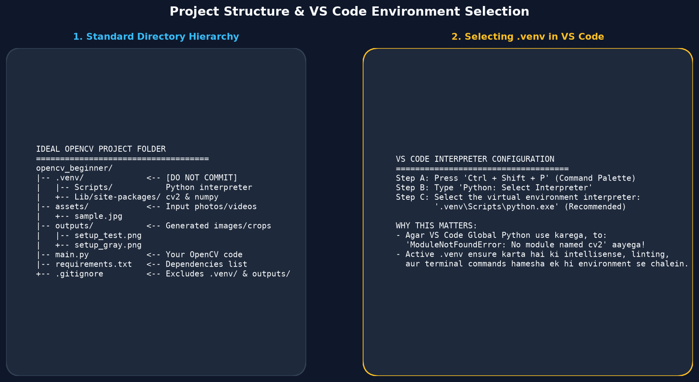
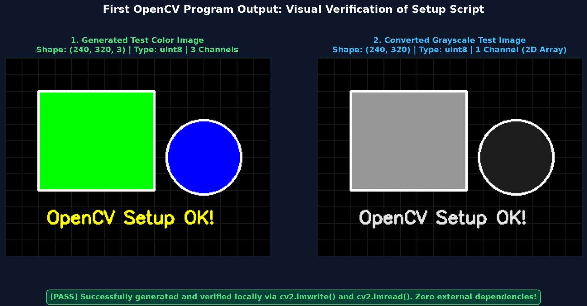
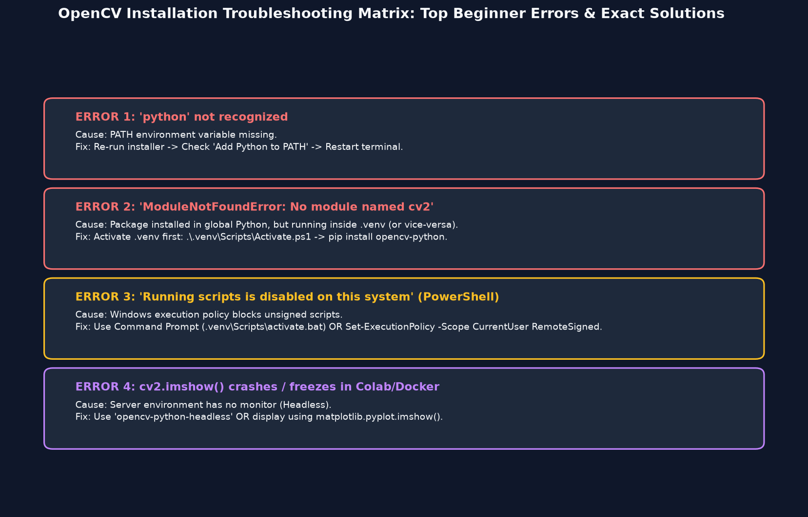

Complete step-by-step setup guide for beginners: Install Python on Windows, configure environment PATH, master pip, isolate dependencies using Virtual Environments (.venv), configure VS Code, and run your first verified OpenCV image program without errors.
Computer Vision sikhne ki journey ka sabse pehla aur sabse critical milestone hota hai: ek clean, stable aur reproducible programming environment setup karna. Agar aapka environment theek se configured nahi hoga, to aap har doosre din ModuleNotFoundError, version mismatch, ya PATH errors mein phans jayenge.
Python aur OpenCV ka connection kya hai?
OpenCV internally high-performance C++ mein likha gaya hai taaki wo real-time mein fast chal sake. Lekin developers ke liye C++ mein memory manage karna complex hota hai. Isliye OpenCV humein Python bindings (cv2) provide karta hai — jisse hum simple Python code likhkar C++ ki supersonic speed ka fayda utha sakte hain!

Verify Terminal -> Create .venv -> Install Packages -> Verify cv2 -> Run First Program" loading="lazy">Beginners aksar technical terms se confuse ho jaate hain. Yahan 16 fundamental terms hain jo aapko hamesha clear hone chahiye:
| Term | Beginner Definition (Hinglish) | Why It Matters for OpenCV |
|---|---|---|
| Python | Ek high-level, human-friendly programming language. | Hamara primary code likhne ka medium hai. |
| Python Interpreter | Wo background program jo Python code ko computer ke samajhne layak machine code mein convert karta hai (python.exe). | Isi interpreter ke zariye hamari OpenCV scripts execute hoti hain. |
| Python Version | Release number (e.g. Python 3.10, 3.11, 3.12, 3.13). | OpenCV pre-built binary wheels specific Python versions ke liye banayi jaati hain. |
| Package & Library | Pre-written code ka bundle jo humein extra powers deta hai. | OpenCV aur NumPy reusable libraries hain jo computer vision easy banati hain. |
| pip | Python ka official package manager (Installer). | Internet se OpenCV aur NumPy download karke install karta hai. |
| Terminal / Command Prompt | Text-based screen jahan hum direct commands type karte hain (CMD ya PowerShell). | Installation commands aur scripts run karne ke liye zaroori hai. |
| PATH Variable | Windows system ki ek list jo batati hai ki python.exe kis folder mein rakha hai. | Agar PATH missing ho, to terminal bolega 'python' is not recognized. |
| Virtual Environment | Ek isolated folder jisme ek specific project ke liye packages alag rehte hain. | Alag-alag projects ke package versions aapas mein ladte (conflict) nahi hain. |
| venv | Python ka built-in standard tool virtual environments banane ke liye. | Bina koi extra software download kiye .venv create karta hai. |
| Module Import | Python code mein import cv2 likhkar library ko activate karna. | Memory mein OpenCV functions ko load karta hai. |
| cv2 | OpenCV library ka Python import name. | OpenCV 2.x C++ API design ke baad se iska import name cv2 rakha gaya hai. |
| NumPy | High-performance numerical multidimensional array library. | OpenCV ki har image internally ek NumPy array hi hoti hai! |
| IDE / Code Editor | Software jahan code likha, debug aur run kiya jata hai (VS Code, PyCharm). | Syntax highlighting aur error checking provide karta hai. |
| VS Code | Microsoft ka free, lightweight aur most popular code editor. | OpenCV projects develop karne ke liye industry-standard editor hai. |
| Jupyter Notebook | Web-based interactive notebook jahan code blocks (cells) mein execute hota hai. | Images aur graphs ko turant screen par visualize karne ke liye helpful hai. |
| Headless Environment | Aisa server ya container jisme koi monitor/GUI display attach nahi hota (Docker, Cloud VM). | Wahan cv2.imshow() crash karega; headless OpenCV use karna padta hai. |
Aamtaur par students sochte hain ki OpenCV run karne ke liye bohot mehenga gaming laptop, dedicated NVIDIA GPU ya external camera chahiye. Yeh ek bohot bada misconception hai!
Windows par Python install karte waqt 90% students ek choti si galti karte hain jiski wajah se aage chal kar 'python' is not recognized error aati hai. Yahan sahi process hai:
Terminal kholkar check karein:
Keyboard par Win + R dabayein, cmd ya powershell type karein aur Enter dabayein:
# Check Python version
python --version
# Check exact Python executable path
python -c "import sys; print(sys.executable)"Python install hone ke baad, humein extra libraries download karne ke liye pip ki zaroorat hoti hai. Pip Python ke sath pre-installed aata hai.
# Verify pip is working
python -m pip --version
# Upgrade pip to latest version safely
python -m pip install --upgrade pipKabhi bhi apne computer ke Global Python mein saare packages install mat kijiye! Kal ko agar Project A ko purana OpenCV 4.5 chahiye aur Project B ko naya OpenCV 4.13 chahiye, to global Python clash ho jayega.
Step-by-Step Virtual Environment Setup on Windows:
# 1. Create a dedicated project directory
mkdir opencv_beginner
cd opencv_beginner
# 2. Create virtual environment named '.venv'
python -m venv .venv
# 3. Activate in PowerShell
.\.venv\Scripts\Activate.ps1
# (Alternative for Command Prompt CMD: .venv\Scripts\activate.bat)Jab activation successful ho jati hai, to terminal prompt ke shuru mein (.venv) likha hua aane lagta hai:

Virtual environment active hone par OpenCV install karein:
# Standard Desktop installation (includes GUI features like cv2.imshow)
python -m pip install opencv-python
# Verify installation & check installed version
python -c "import cv2; print(cv2.__version__)"Headless Build kab use karein?
Agar aap Docker container, AWS server, ya Google Colab background task mein hain jahan koi screen nahi hai, to GUI-free version install kiya jata hai: python -m pip install opencv-python-headless. Dono ko ek saath install mat karein!
OpenCV aur NumPy ka rishta bilkul Car aur Engine jaisa hai. OpenCV computer vision ke algorithm provide karta hai, lekin images ko memory mein store karne ka saara kaam NumPy multidimensional array karti hai.
# Install or verify NumPy
python -m pip install numpy
# Verify NumPy version
python -c "import numpy as np; print(np.__version__)"VS Code duniya ka sabse popular free code editor hai. OpenCV ke liye ise configure karna bohot aasan hai:

Normal Python script (.py) pure program ko ek saath chalati hai. Lekin Jupyter Notebook (.ipynb) code ko alag-alag blocks (cells) mein execute karta hai aur Matplotlib charts ko seedha webpage ke andar inline render kar deta hai.
Exploratory Data Analysis (EDA), machine learning experiments, image filtering testing, aur college assignments ke liye best hai.
Production automation, real-time webcam feeds, GUI window popups (cv2.imshow), aur deployment ke liye standard .py script use hoti hai.
Ab hamara environment 100% ready hai! Chaliye ek complete self-contained test script chalate hain jo kisi external photo ya webcam par depend nahi karti — yeh script khud ek color synthetic image banayegi, save karegi, reload karegi aur grayscale mein convert karegi:
from pathlib import Path
import sys
import cv2
import numpy as np
# 1. Print Environment Diagnostics
print("Python version: ", sys.version.split()[0])
print("Python executable:", sys.executable)
print("OpenCV version: ", cv2.__version__)
print("NumPy version: ", np.__version__)
# 2. Ensure output directory exists
output_dir = Path("outputs")
output_dir.mkdir(parents=True, exist_ok=True)
# 3. Create a synthetic color image (Height=240, Width=320, Channels=3)
image = np.zeros((240, 320, 3), dtype=np.uint8)
# 4. Draw a bright green rectangle (BGR: 0, 255, 0)
cv2.rectangle(image, (40, 40), (180, 160), (0, 255, 0), thickness=-1)
# 5. Draw a bright blue circle (BGR: 255, 0, 0)
cv2.circle(image, (240, 120), 45, (255, 0, 0), thickness=-1)
# 6. Save image to disk
original_path = output_dir / "setup_test.png"
gray_path = output_dir / "setup_test_gray.png"
write_ok = cv2.imwrite(str(original_path), image)
if not write_ok:
raise RuntimeError("Could not save the test image.")
# 7. Read image back to verify reading pipeline
loaded = cv2.imread(str(original_path))
if loaded is None:
raise RuntimeError("Could not read the saved test image.")
# 8. Convert to Grayscale
gray = cv2.cvtColor(loaded, cv2.COLOR_BGR2GRAY)
gray_write_ok = cv2.imwrite(str(gray_path), gray)
if not gray_write_ok:
raise RuntimeError("Could not save the grayscale image.")
# 9. Audit dimensions and files
print("Loaded shape: ", loaded.shape)
print("Loaded dtype: ", loaded.dtype)
print("Grayscale shape: ", gray.shape)
print("Original file exists: ", original_path.is_file())
print("Grayscale file exists:", gray_path.is_file())
Jab aapka script successful output print karta hai, to har line ek specific guarantee deti hai:
Jab aap apna project kisi doosre computer ya GitHub par share karte hain, to aap .venv folder share nahi karte (kyunki wo bohot bada hota hai aur machine-specific binaries hoti hain). Iski jagah hum ek choti si text file banate hain: requirements.txt.
opencv-python>=4.10.0
numpy>=2.0.0Naye computer par bas yeh single command chalane se poora setup reproduce ho jata hai:
python -m pip install -r requirements.txtCause: PATH variable mein python missing hai.
Fix: Python installer dobara chala kar "Modify" → "Add Python to environment variables" check karein aur terminal restart karein.
Cause: Package global mein install hua lekin terminal .venv mein chal raha hai (ya vice-versa).
Fix: Virtual environment activate karein aur run karein: python -m pip install opencv-python.
Cause: Windows default execution policy unsigned scripts block karti hai.
Fix: Command Prompt (CMD) use karein ya Set-ExecutionPolicy -Scope CurrentUser RemoteSigned run karein.
Cause: Headless environment mein GUI window open nahi ho sakti.
Fix: matplotlib.pyplot.imshow() use karein ya opencv-python-headless package use karein.

Laptop par pehli baar Python daalna hai. Download Python 3.12+ 64-bit → Tick PATH → Create folder opencv_lab → Create .venv → Run setup test script → Ready for practicals!
Aapke system par pehle se Django ya Pandas project chal raha hai. Humesha project root mein alag .venv banayein taaki existing libraries ke version modify na hon.
Apne laptop par terminal kholen aur yeh 5 steps complete karein: